设计模式
设计模式
面向对象设计原则
常用的面向对象设计原则包括7个，这些原则并不是孤立存在的，它们相互依赖，相互补充。
| 设计原则名称 | 设计原则简介 |
|---|---|
| 单一职责原则（Single Responsibility Principle, SRP） | 类的职责要单一，不能将太多的职责放在一个类中 |
| 开闭原则（Open-Closed Principle, OCP） | 软件实体对扩展是开放的，但对修改是关闭的，即在不修改一个软件实体的基础上去扩展其功能 |
| 里氏代换原则（Liskov Substitution Principle, LSP） | 在软件系统中，一个可以接受基类(父类)对象的地方必然可以接受一个子类对象 |
| 依赖倒转原则（Dependency Inversion Principle, DIP） | 要针对抽象层编程，而不要针对具体类编程 |
| 接口隔离原则（Interface Segregation Principle, ISP） | 使用多个专门的接口来取代一个统一的接口 |
| 合成复用原则（Composite Reuse Principle, CRP） | 在系统中应该尽量多使用组合和聚合关联关系，尽量少使用甚至不使用继承关系 |
| 迪米特法则（Law of Demeter, LoD） | 一个软件实体对其他实体的引用越少越好，或者说如果两个类不必彼此直接通信，那么这两个类就不应当发生直接的相互作用，而是通过引入一个第三者发生间接交互 |
| 共同封闭 | 指因某个原因而需要修改的所有类,都应封闭在一个包里,一个变化若对一个封闭包中的类产生影响,则将对该包中的所有类产生影响,而对其他包则不造成任何影响 |
| 共同重用 | 指一个包中的所有类应该是共同重用的,即如果重用了包中的一个类,那么就要重用包中所有类 |
设计模式简介
设计模式总共分为三大类,共计23种设计模式,四大类为:
- 创建型模式
- 结构型模式
- 行为型模式
- J2EE设计模式
常见设计模式
创建型模式
工厂模式
定义创建对象的接口,让其子类自己决定实例化哪一个工厂类,工厂模式使其创建过程延迟到子类进行
介绍:
意图：定义一个创建对象的接口，让其子类自己决定实例化哪一个工厂类，工厂模式使其创建过程延迟到子类进行。
主要解决：主要解决接口选择的问题。
何时使用：我们明确地计划不同条件下创建不同实例时。
如何解决：让其子类实现工厂接口，返回的也是一个抽象的产品。
关键代码：创建过程在其子类执行。
应用实例： 1、您需要一辆汽车，可以直接从工厂里面提货，而不用去管这辆汽车是怎么做出来的，以及这个汽车里面的具体实现。 2、Hibernate 换数据库只需换方言和驱动就可以。
优点： 1、一个调用者想创建一个对象，只要知道其名称就可以了。 2、扩展性高，如果想增加一个产品，只要扩展一个工厂类就可以。 3、屏蔽产品的具体实现，调用者只关心产品的接口。
缺点：每次增加一个产品时，都需要增加一个具体类和对象实现工厂，使得系统中类的个数成倍增加，在一定程度上增加了系统的复杂度，同时也增加了系统具体类的依赖。这并不是什么好事。
使用场景： 1、日志记录器：记录可能记录到本地硬盘、系统事件、远程服务器等，用户可以选择记录日志到什么地方。 2、数据库访问，当用户不知道最后系统采用哪一类数据库，以及数据库可能有变化时。 3、设计一个连接服务器的框架，需要三个协议，”POP3”、”IMAP”、”HTTP”，可以把这三个作为产品类，共同实现一个接口。
注意事项：作为一种创建类模式，在任何需要生成复杂对象的地方，都可以使用工厂方法模式。有一点需要注意的地方就是复杂对象适合使用工厂模式，而简单对象，特别是只需要通过 new 就可以完成创建的对象，无需使用工厂模式。如果使用工厂模式，就需要引入一个工厂类，会增加系统的复杂度。
优点:
1、一个调用者想创建一个对象，只要知道其名称就可以了。 2、扩展性高，如果想增加一个产品，只要扩展一个工厂类就可以。 3、屏蔽产品的具体实现，调用者只关心产品的接口。
缺点:
每次增加一个产品时，都需要增加一个具体类和对象实现工厂，使得系统中类的个数成倍增加，在一定程度上增加了系统的复杂度，同时也增加了系统具体类的依赖。这并不是什么好事。
实现:
我们将创建一个 Shape 接口和实现 Shape 接口的实体类。下一步是定义工厂类 ShapeFactory。
FactoryPatternDemo 类使用 ShapeFactory 来获取 Shape 对象。它将向 ShapeFactory 传递信息（CIRCLE / RECTANGLE / SQUARE），以便获取它所需对象的类型。
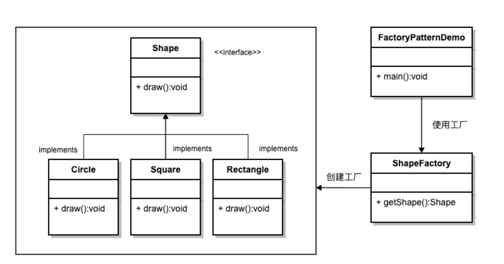
抽象工厂模式
围绕一个超级工厂创建其他工厂.该超级工厂又称为其它工厂的工厂.
在抽象工厂模式中,接口是负责创建一个相关对象的工厂,不需要显式指定他们的类.每个生成的工厂都能按照工厂模式提供对象
介绍:
意图：提供一个创建一系列相关或相互依赖对象的接口，而无需指定它们具体的类。
主要解决：主要解决接口选择的问题。
何时使用：系统的产品有多于一个的产品族，而系统只消费其中某一族的产品。
如何解决：在一个产品族里面，定义多个产品。
关键代码：在一个工厂里聚合多个同类产品。
应用实例：工作了，为了参加一些聚会，肯定有两套或多套衣服吧，比如说有商务装（成套，一系列具体产品）、时尚装（成套，一系列具体产品），甚至对于一个家庭来说，可能有商务女装、商务男装、时尚女装、时尚男装，这些也都是成套的，即一系列具体产品。假设一种情况（现实中是不存在的，要不然，没法进入共产主义了，但有利于说明抽象工厂模式），在您的家中，某一个衣柜（具体工厂）只能存放某一种这样的衣服（成套，一系列具体产品），每次拿这种成套的衣服时也自然要从这个衣柜中取出了。用 OOP 的思想去理解，所有的衣柜（具体工厂）都是衣柜类的（抽象工厂）某一个，而每一件成套的衣服又包括具体的上衣（某一具体产品），裤子（某一具体产品），这些具体的上衣其实也都是上衣（抽象产品），具体的裤子也都是裤子（另一个抽象产品）。
优点：当一个产品族中的多个对象被设计成一起工作时，它能保证客户端始终只使用同一个产品族中的对象。
缺点：产品族扩展非常困难，要增加一个系列的某一产品，既要在抽象的 Creator 里加代码，又要在具体的里面加代码。
使用场景： 1、QQ 换皮肤，一整套一起换。 2、生成不同操作系统的程序。
注意事项：产品族难扩展，产品等级易扩展。
实现:
我们将创建 Shape 和 Color 接口和实现这些接口的实体类。下一步是创建抽象工厂类 AbstractFactory。接着定义工厂类 ShapeFactory 和 ColorFactory，这两个工厂类都是扩展了 AbstractFactory。然后创建一个工厂创造器/生成器类 FactoryProducer。
AbstractFactoryPatternDemo 类使用 FactoryProducer 来获取 AbstractFactory 对象。它将向 AbstractFactory 传递形状信息 Shape（CIRCLE / RECTANGLE / SQUARE），以便获取它所需对象的类型。同时它还向 AbstractFactory 传递颜色信息 Color（RED / GREEN / BLUE），以便获取它所需对象的类型。
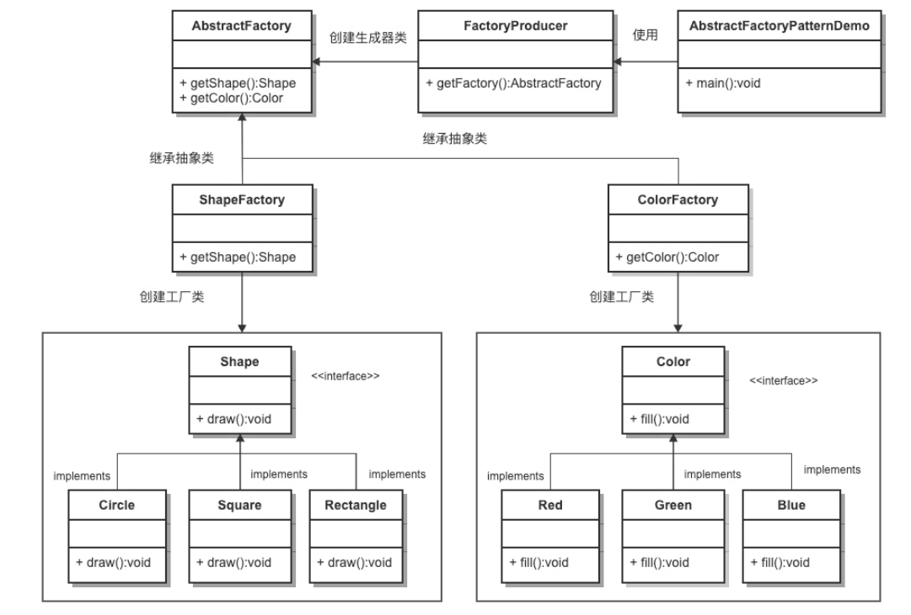
单例模式
此模式涉及到一个单一的类,该类负责创建自己对象,同时确保只有单个对象被创建.这个类提供了一种访问其唯一的对象的方式,可以直接访问,不需要实例化该类的对象
注意:
- 单例类只能有一个实例
- 单例类必须创建自己的唯一实例
- 单例类必须给所以其他对象提供这一实例
介绍:
意图：保证一个类仅有一个实例，并提供一个访问它的全局访问点。
主要解决：一个全局使用的类频繁地创建与销毁。
何时使用：当您想控制实例数目，节省系统资源的时候。
如何解决：判断系统是否已经有这个单例，如果有则返回，如果没有则创建。
关键代码：构造函数是私有的。
应用实例：
- 1、一个班级只有一个班主任。
- 2、Windows 是多进程多线程的，在操作一个文件的时候，就不可避免地出现多个进程或线程同时操作一个文件的现象，所以所有文件的处理必须通过唯一的实例来进行。
- 3、一些设备管理器常常设计为单例模式，比如一个电脑有两台打印机，在输出的时候就要处理不能两台打印机打印同一个文件。
优点：
- 1、在内存里只有一个实例，减少了内存的开销，尤其是频繁的创建和销毁实例（比如管理学院首页页面缓存）。
- 2、避免对资源的多重占用（比如写文件操作）。
缺点：没有接口，不能继承，与单一职责原则冲突，一个类应该只关心内部逻辑，而不关心外面怎么样来实例化。
使用场景：
- 1、要求生产唯一序列号。
- 2、WEB 中的计数器，不用每次刷新都在数据库里加一次，用单例先缓存起来。
- 3、创建的一个对象需要消耗的资源过多，比如 I/O 与数据库的连接等。
注意事项：getInstance() 方法中需要使用同步锁 synchronized (Singleton.class) 防止多线程同时进入造成 instance 被多次实例化。
实现:
注意构造函数私有的,我们将创建一个SingleObject类有它的私有构造函数何本身的一个静态实例.
SingleObject 类提供了一个静态方法，供外界获取它的静态实例。SingletonPatternDemo 类使用 SingleObject 类来获取 SingleObject 对象。
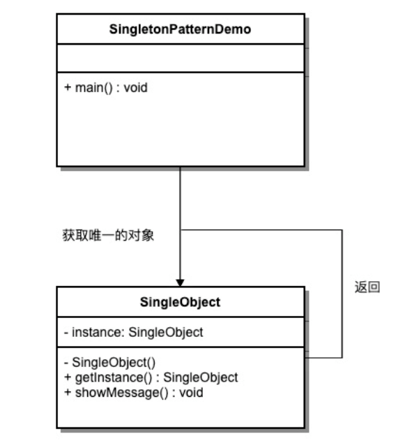
建造者模式
建造者模式（Builder Pattern）使用多个简单的对象一步一步构建成一个复杂的对象。这种类型的设计模式属于创建型模式，它提供了一种创建对象的最佳方式。
一个 Builder 类会一步一步构造最终的对象。该 Builder 类是独立于其他对象的。
介绍:
意图：将一个复杂的构建与其表示相分离，使得同样的构建过程可以创建不同的表示。
主要解决：主要解决在软件系统中，有时候面临着”一个复杂对象”的创建工作，其通常由各个部分的子对象用一定的算法构成；由于需求的变化，这个复杂对象的各个部分经常面临着剧烈的变化，但是将它们组合在一起的算法却相对稳定。
何时使用：一些基本部件不会变，而其组合经常变化的时候。
如何解决：将变与不变分离开。
关键代码：建造者：创建和提供实例，导演：管理建造出来的实例的依赖关系。
应用实例： 1、去肯德基，汉堡、可乐、薯条、炸鸡翅等是不变的，而其组合是经常变化的，生成出所谓的”套餐”。 2、JAVA 中的 StringBuilder。
优点： 1、建造者独立，易扩展。 2、便于控制细节风险。
缺点： 1、产品必须有共同点，范围有限制。 2、如内部变化复杂，会有很多的建造类。
使用场景： 1、需要生成的对象具有复杂的内部结构。 2、需要生成的对象内部属性本身相互依赖。
注意事项：与工厂模式的区别是：建造者模式更加关注与零件装配的顺序。
实现:
我们假设一个快餐店的商业案例，其中，一个典型的套餐可以是一个汉堡（Burger）和一杯冷饮（Cold drink）。汉堡（Burger）可以是素食汉堡（Veg Burger）或鸡肉汉堡（Chicken Burger），它们是包在纸盒中。冷饮（Cold drink）可以是可口可乐（coke）或百事可乐（pepsi），它们是装在瓶子中。
我们将创建一个表示食物条目（比如汉堡和冷饮）的 Item 接口和实现 Item 接口的实体类，以及一个表示食物包装的 Packing 接口和实现 Packing 接口的实体类，汉堡是包在纸盒中，冷饮是装在瓶子中。
然后我们创建一个 Meal 类，带有 Item 的 ArrayList 和一个通过结合 Item 来创建不同类型的 Meal 对象的 MealBuilder。BuilderPatternDemo 类使用 MealBuilder 来创建一个 Meal。
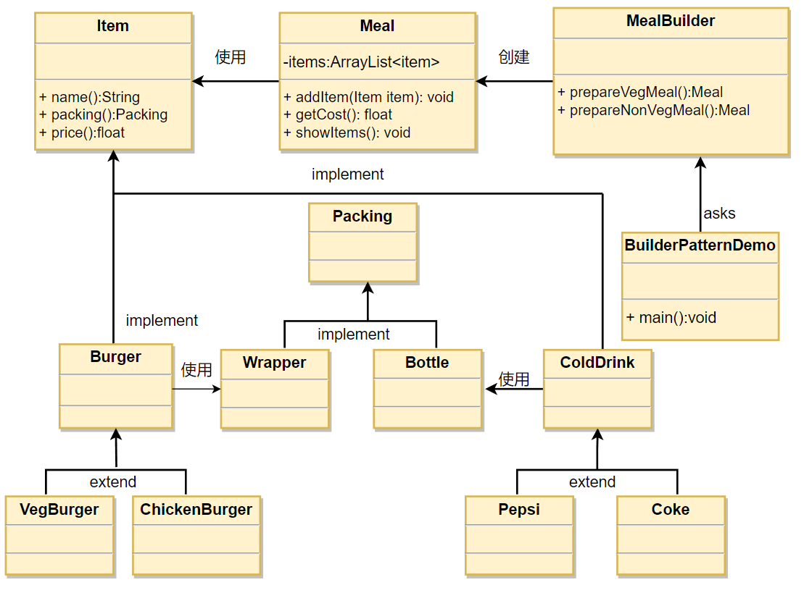
原型模式
原型模式（Prototype Pattern）是用于创建重复的对象，同时又能保证性能.它提供了一种创建对象的最佳方式。
这种模式是实现了一个原型接口，该接口用于创建当前对象的克隆。当直接创建对象的代价比较大时，则采用这种模式。例如，一个对象需要在一个高代价的数据库操作之后被创建。我们可以缓存该对象，在下一个请求时返回它的克隆，在需要的时候更新数据库，以此来减少数据库调用。
介绍:
意图：用原型实例指定创建对象的种类，并且通过拷贝这些原型创建新的对象。
主要解决：在运行期建立和删除原型。
何时使用： 1、当一个系统应该独立于它的产品创建，构成和表示时。 2、当要实例化的类是在运行时刻指定时，例如，通过动态装载。 3、为了避免创建一个与产品类层次平行的工厂类层次时。 4、当一个类的实例只能有几个不同状态组合中的一种时。建立相应数目的原型并克隆它们可能比每次用合适的状态手工实例化该类更方便一些。
如何解决：利用已有的一个原型对象，快速地生成和原型对象一样的实例。
关键代码： 1、实现克隆操作，在 JAVA 实现 Cloneable 接口，重写 clone()，在 .NET 中可以使用 Object 类的 MemberwiseClone() 方法来实现对象的浅拷贝或通过序列化的方式来实现深拷贝。 2、原型模式同样用于隔离类对象的使用者和具体类型（易变类）之间的耦合关系，它同样要求这些”易变类”拥有稳定的接口。
应用实例： 1、细胞分裂。 2、JAVA 中的 Object clone() 方法。
优点： 1、性能提高。 2、逃避构造函数的约束。
缺点： 1、配备克隆方法需要对类的功能进行通盘考虑，这对于全新的类不是很难，但对于已有的类不一定很容易，特别当一个类引用不支持串行化的间接对象，或者引用含有循环结构的时候。 2、必须实现 Cloneable 接口。
使用场景： 1、资源优化场景。 2、类初始化需要消化非常多的资源，这个资源包括数据、硬件资源等。 3、性能和安全要求的场景。 4、通过 new 产生一个对象需要非常繁琐的数据准备或访问权限，则可以使用原型模式。 5、一个对象多个修改者的场景。 6、一个对象需要提供给其他对象访问，而且各个调用者可能都需要修改其值时，可以考虑使用原型模式拷贝多个对象供调用者使用。 7、在实际项目中，原型模式很少单独出现，一般是和工厂方法模式一起出现，通过 clone 的方法创建一个对象，然后由工厂方法提供给调用者。原型模式已经与 Java 融为浑然一体，大家可以随手拿来使用。
注意事项：与通过对一个类进行实例化来构造新对象不同的是，原型模式是通过拷贝一个现有对象生成新对象的。浅拷贝实现 Cloneable，重写，深拷贝是通过实现 Serializable 读取二进制流。
实现:
我们将创建一个抽象类 Shape 和扩展了 Shape 类的实体类。下一步是定义类 ShapeCache，该类把 shape 对象存储在一个 Hashtable 中，并在请求的时候返回它们的克隆。PrototypePatternDemo 类使用 ShapeCache 类来获取 Shape 对象。
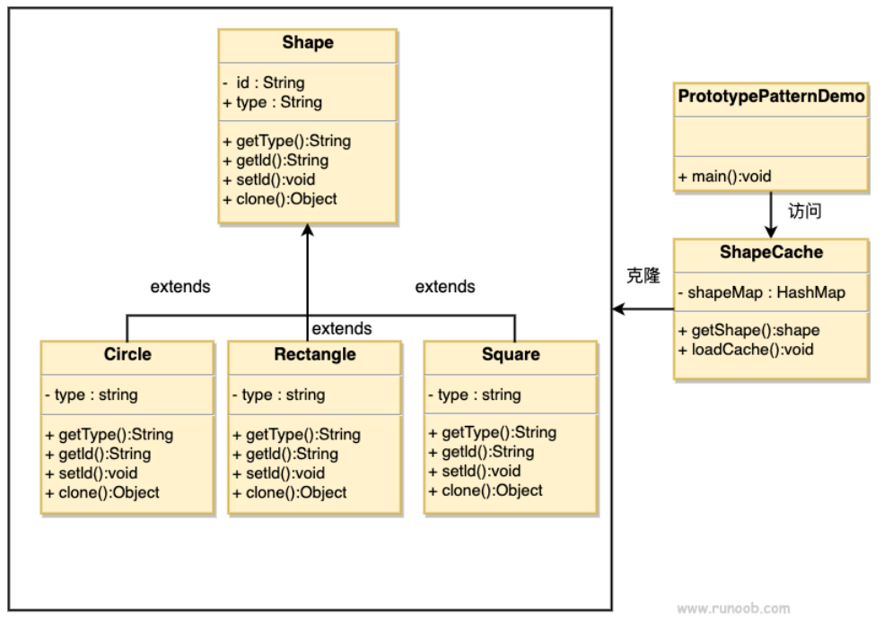
结构型模式
适配器模式
适配器模式是作为两个不兼容的接口之间的桥梁。这种类型的设计模式属于结构型模式，它结合了两个独立接口的功能。这种模式涉及到一个单一的类，该类负责加入独立的或不兼容的接口功能。举个真实的例子，读卡器是作为内存卡和笔记本之间的适配器。您将内存卡插入读卡器，再将读卡器插入笔记本，这样就可以通过笔记本来读取内存卡。
我们通过下面的实例来演示适配器模式的使用。其中，音频播放器设备只能播放 mp3 文件，通过使用一个更高级的音频播放器来播放 vlc 和 mp4 文件。
介绍:
意图：将一个类的接口转换成客户希望的另外一个接口。适配器模式使得原本由于接口不兼容而不能一起工作的那些类可以一起工作。
主要解决：主要解决在软件系统中，常常要将一些”现存的对象”放到新的环境中，而新环境要求的接口是现对象不能满足的。
何时使用： 1、系统需要使用现有的类，而此类的接口不符合系统的需要。 2、想要建立一个可以重复使用的类，用于与一些彼此之间没有太大关联的一些类，包括一些可能在将来引进的类一起工作，这些源类不一定有一致的接口。 3、通过接口转换，将一个类插入另一个类系中。（比如老虎和飞禽，现在多了一个飞虎，在不增加实体的需求下，增加一个适配器，在里面包容一个虎对象，实现飞的接口。）
如何解决：继承或依赖（推荐）。
关键代码：适配器继承或依赖已有的对象，实现想要的目标接口。
应用实例： 1、美国电器 110V，中国 220V，就要有一个适配器将 110V 转化为 220V。 2、JAVA JDK 1.1 提供了 Enumeration 接口，而在 1.2 中提供了 Iterator 接口，想要使用 1.2 的 JDK，则要将以前系统的 Enumeration 接口转化为 Iterator 接口，这时就需要适配器模式。 3、在 LINUX 上运行 WINDOWS 程序。 4、JAVA 中的 jdbc。
优点： 1、可以让任何两个没有关联的类一起运行。 2、提高了类的复用。 3、增加了类的透明度。 4、灵活性好。
缺点： 1、过多地使用适配器，会让系统非常零乱，不易整体进行把握。比如，明明看到调用的是 A 接口，其实内部被适配成了 B 接口的实现，一个系统如果太多出现这种情况，无异于一场灾难。因此如果不是很有必要，可以不使用适配器，而是直接对系统进行重构。 2.由于 JAVA 至多继承一个类，所以至多只能适配一个适配者类，而且目标类必须是抽象类。
使用场景：有动机地修改一个正常运行的系统的接口，这时应该考虑使用适配器模式。
注意事项：适配器不是在详细设计时添加的，而是解决正在服役的项目的问题。
实现:
有一个 MediaPlayer 接口和一个实现了 MediaPlayer 接口的实体类 AudioPlayer。 默认情况下，AudioPlayer 可以播放 mp3 格式的音频文件。
我们还有另一个接口 AdvancedMediaPlayer 和实现了 AdvancedMediaPlayer 接口的实体类。该类可以播放 vlc 和 mp4 格式的文件。
我们想要让 AudioPlayer 播放其他格式的音频文件。为了实现这个功能，我们*需要创建一个实现了 MediaPlayer 接口的适配器类 MediaAdapter，并使用 AdvancedMediaPlayer 对象来播放所需的格式。*
AudioPlayer 使用适配器类 MediaAdapter 传递所需的音频类型，不需要知道能播放所需格式音频的实际类。AdapterPatternDemo 类使用 AudioPlayer 类来播放各种格式。
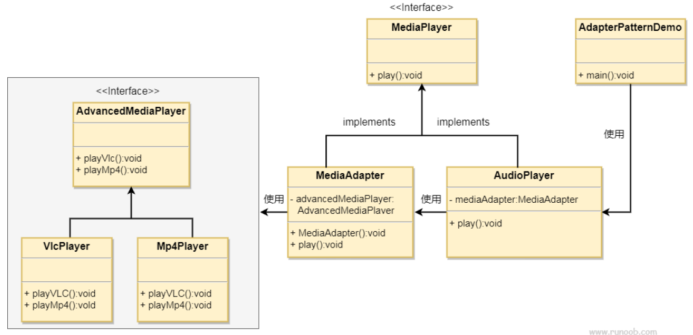
桥接模式
桥接（Bridge）是用于把抽象化与实现化解耦，使得二者可以独立变化。这种类型的设计模式属于结构型模式，它通过提供抽象化和实现化之间的桥接结构，来实现二者的解耦。
这种模式涉及到一个作为桥接的接口，使得实体类的功能独立于接口实现类。这两种类型的类可被结构化改变而互不影响。
我们通过下面的实例来演示桥接模式（Bridge Pattern）的用法。其中，可以使用相同的抽象类方法但是不同的桥接实现类，来画出不同颜色的圆。
介绍:
意图：将抽象部分与实现部分分离，使它们都可以独立的变化。
主要解决：在有多种可能会变化的情况下，用继承会造成类爆炸问题，扩展起来不灵活。
何时使用：实现系统可能有多个角度分类，每一种角度都可能变化。
如何解决：把这种多角度分类分离出来，让它们独立变化，减少它们之间耦合。
关键代码：抽象类依赖实现类。
应用实例： 1、猪八戒从天蓬元帅转世投胎到猪，转世投胎的机制将尘世划分为两个等级，即：灵魂和肉体，前者相当于抽象化，后者相当于实现化。生灵通过功能的委派，调用肉体对象的功能，使得生灵可以动态地选择。 2、墙上的开关，可以看到的开关是抽象的，不用管里面具体怎么实现的。
优点： 1、抽象和实现的分离。 2、优秀的扩展能力。 3、实现细节对客户透明。
缺点：桥接模式的引入会增加系统的理解与设计难度，由于聚合关联关系建立在抽象层，要求开发者针对抽象进行设计与编程。
使用场景： 1、如果一个系统需要在构件的抽象化角色和具体化角色之间增加更多的灵活性，避免在两个层次之间建立静态的继承联系，通过桥接模式可以使它们在抽象层建立一个关联关系。 2、对于那些不希望使用继承或因为多层次继承导致系统类的个数急剧增加的系统，桥接模式尤为适用。 3、一个类存在两个独立变化的维度，且这两个维度都需要进行扩展。
注意事项：对于两个独立变化的维度，使用桥接模式再适合不过了。
实现:
我们有一个作为桥接实现的 DrawAPI 接口和实现了 DrawAPI 接口的实体类 RedCircle、GreenCircle。Shape 是一个抽象类，将使用 DrawAPI 的对象。BridgePatternDemo 类使用 Shape 类来画出不同颜色的圆。
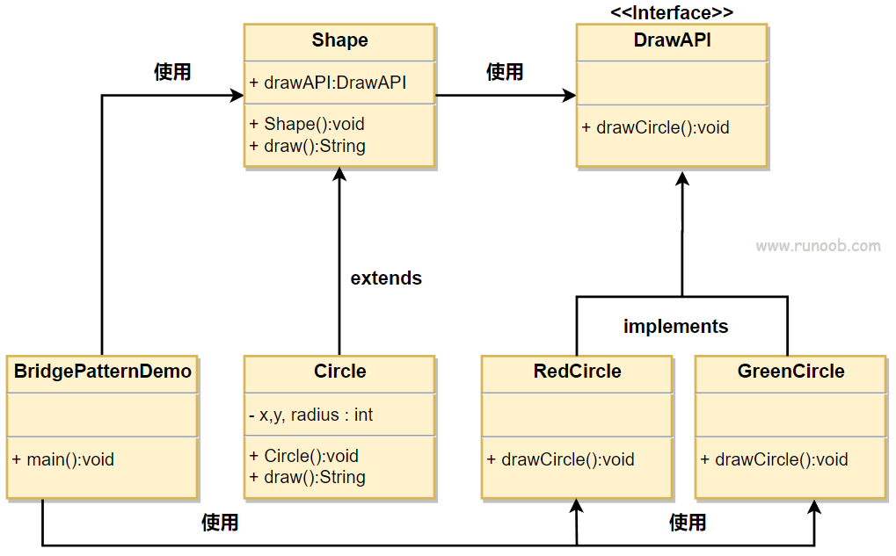
java代码实现:
创建桥接实现接口
DrawAPI.java
1 | public interface DrawAPI { |
创建实现了 DrawAPI 接口的实体桥接实现类。
RedCircle.java
1 | public class RedCircle implements DrawAPI { |
GreenCircle.java
1 | public class GreenCircle implements DrawAPI { |
使用 DrawAPI 接口创建抽象类 Shape.java。
1 | public abstract class Shape { |
创建实现了 Shape 抽象类的实体类。
Circle.java
1 | public class Circle extends Shape { |
使用 Shape 和 DrawAPI 类画出不同颜色的圆。 BridgePatternDemo.java
1 | public class BridgePatternDemo { |
过滤器模式
过滤器模式（Filter Pattern）或标准模式（Criteria Pattern）是一种设计模式，这种模式允许开发人员使用不同的标准来过滤一组对象，通过逻辑运算以解耦的方式把它们连接起来。这种类型的设计模式属于结构型模式，它结合多个标准来获得单一标准。
实现:
我们将创建一个 Person 对象、Criteria 接口和实现了该接口的实体类，来过滤 Person 对象的列表。CriteriaPatternDemo 类使用 Criteria 对象，基于各种标准和它们的结合来过滤 Person 对象的列表。
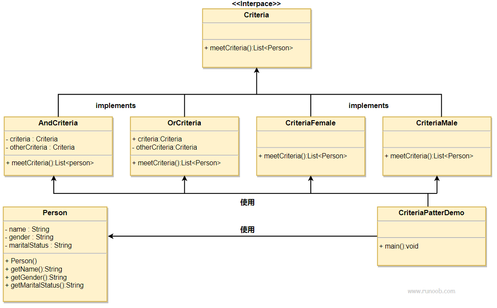
组成模式
组合模式（Composite Pattern），又叫部分整体模式，是用于把一组相似的对象当作一个单一的对象。组合模式依据树形结构来组合对象，用来表示部分以及整体层次。这种类型的设计模式属于结构型模式，它创建了对象组的树形结构。
这种模式创建了一个包含自己对象组的类。该类提供了修改相同对象组的方式。
我们通过下面的实例来演示组合模式的用法。实例演示了一个组织中员工的层次结构。
介绍:
意图：将对象组合成树形结构以表示”部分-整体”的层次结构。组合模式使得用户对单个对象和组合对象的使用具有一致性。
主要解决：它在我们树型结构的问题中，模糊了简单元素和复杂元素的概念，客户程序可以像处理简单元素一样来处理复杂元素，从而使得客户程序与复杂元素的内部结构解耦。
何时使用： 1、您想表示对象的部分-整体层次结构（树形结构）。 2、您希望用户忽略组合对象与单个对象的不同，用户将统一地使用组合结构中的所有对象。
如何解决：树枝和叶子实现统一接口，树枝内部组合该接口。
关键代码：树枝内部组合该接口，并且含有内部属性 List，里面放 Component。
应用实例： 1、算术表达式包括操作数、操作符和另一个操作数，其中，另一个操作数也可以是操作数、操作符和另一个操作数。 2、在 JAVA AWT 和 SWING 中，对于 Button 和 Checkbox 是树叶，Container 是树枝。
优点： 1、高层模块调用简单。 2、节点自由增加。
缺点：在使用组合模式时，其叶子和树枝的声明都是实现类，而不是接口，违反了依赖倒置原则。
使用场景：部分、整体场景，如树形菜单，文件、文件夹的管理。
注意事项：定义时为具体类。
实现:
我们有一个类 Employee，该类被当作组合模型类。CompositePatternDemo 类使用 Employee 类来添加部门层次结构，并打印所有员工。
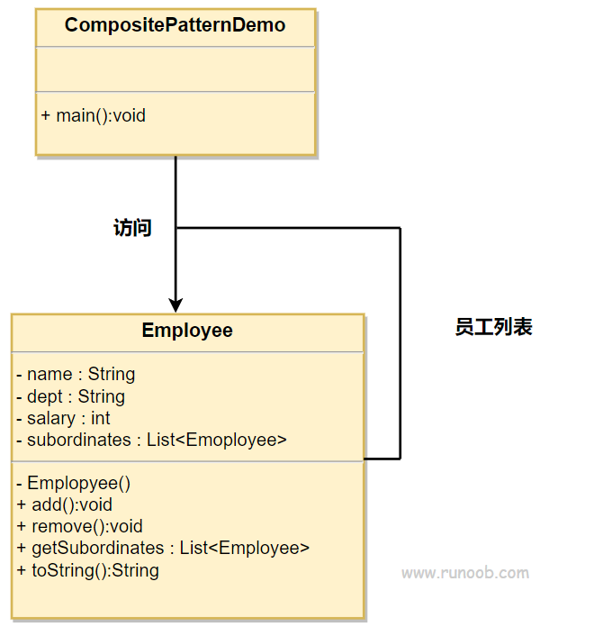
装饰器模式
装饰器模式（Decorator Pattern）允许向一个现有的对象添加新的功能，同时又不改变其结构。这种类型的设计模式属于结构型模式，它是作为现有的类的一个包装。
这种模式创建了一个装饰类，用来包装原有的类，并在保持类方法签名完整性的前提下，提供了额外的功能。
我们通过下面的实例来演示装饰器模式的用法。其中，我们将把一个形状装饰上不同的颜色，同时又不改变形状类。
介绍:
意图：动态地给一个对象添加一些额外的职责。就增加功能来说，装饰器模式相比生成子类更为灵活。
主要解决：一般的，我们为了扩展一个类经常使用继承方式实现，由于继承为类引入静态特征，并且随着扩展功能的增多，子类会很膨胀。
何时使用：在不想增加很多子类的情况下扩展类。
如何解决：将具体功能职责划分，同时继承装饰者模式。
关键代码： 1、Component 类充当抽象角色，不应该具体实现。 2、修饰类引用和继承 Component 类，具体扩展类重写父类方法。
应用实例： 1、孙悟空有 72 变，当他变成”庙宇”后，他的根本还是一只猴子，但是他又有了庙宇的功能。 2、不论一幅画有没有画框都可以挂在墙上，但是通常都是有画框的，并且实际上是画框被挂在墙上。在挂在墙上之前，画可以被蒙上玻璃，装到框子里；这时画、玻璃和画框形成了一个物体。
优点：装饰类和被装饰类可以独立发展，不会相互耦合，装饰模式是继承的一个替代模式，装饰模式可以动态扩展一个实现类的功能。
缺点：多层装饰比较复杂。
使用场景： 1、扩展一个类的功能。 2、动态增加功能，动态撤销。
注意事项：可代替继承。
实现:
我们将创建一个 Shape 接口和实现了 Shape 接口的实体类。然后我们创建一个实现了 Shape 接口的抽象装饰类 ShapeDecorator，并把 Shape 对象作为它的实例变量。
RedShapeDecorator 是实现了 ShapeDecorator 的实体类。
DecoratorPatternDemo 类使用 RedShapeDecorator 来装饰 Shape 对象。
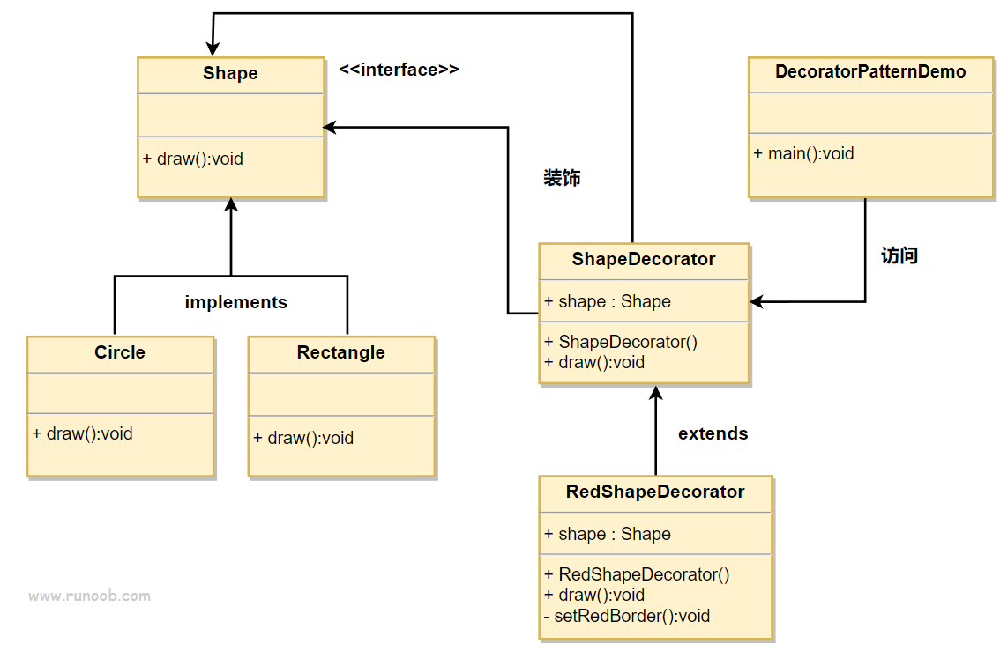
创建一个接口：Shape.java
1 | public interface Shape { |
创建实现接口的实体类。Rectangle.java
1 | public class Rectangle implements Shape { |
Circle.java
1 | public class Circle implements Shape { |
创建实现了 Shape 接口的抽象装饰类。ShapeDecorator.java
1 | public abstract class ShapeDecorator implements Shape { |
创建扩展了 ShapeDecorator 类的实体装饰类。RedShapeDecorator.java
1 | public class RedShapeDecorator extends ShapeDecorator { |
DecoratorPatternDemo.java使用 RedShapeDecorator 来装饰 Shape 对象。
1 | public class DecoratorPatternDemo { |
外观模式
外观模式（Facade Pattern）隐藏系统的复杂性，并向客户端提供了一个客户端可以访问系统的接口。这种类型的设计模式属于结构型模式，它向现有的系统添加一个接口，来隐藏系统的复杂性。
这种模式涉及到一个单一的类，该类提供了客户端请求的简化方法和对现有系统类方法的委托调用。
介绍:
意图：为子系统中的一组接口提供一个一致的界面，外观模式定义了一个高层接口，这个接口使得这一子系统更加容易使用。
主要解决：降低访问复杂系统的内部子系统时的复杂度，简化客户端之间的接口。
何时使用： 1、客户端不需要知道系统内部的复杂联系，整个系统只需提供一个”接待员”即可。 2、定义系统的入口。
如何解决：客户端不与系统耦合，外观类与系统耦合。
关键代码：在客户端和复杂系统之间再加一层，这一层将调用顺序、依赖关系等处理好。
应用实例： 1、去医院看病，可能要去挂号、门诊、划价、取药，让患者或患者家属觉得很复杂，如果有提供接待人员，只让接待人员来处理，就很方便。 2、JAVA 的三层开发模式。
优点： 1、减少系统相互依赖。 2、提高灵活性。 3、提高了安全性。
缺点：不符合开闭原则，如果要改东西很麻烦，继承重写都不合适。
使用场景： 1、为复杂的模块或子系统提供外界访问的模块。 2、子系统相对独立。 3、预防低水平人员带来的风险。
注意事项：在层次化结构中，可以使用外观模式定义系统中每一层的入口。
实现:
我们将创建一个 Shape 接口和实现了 Shape 接口的实体类。下一步是定义一个外观类 ShapeMaker。
ShapeMaker 类使用实体类来代表用户对这些类的调用。FacadePatternDemo 类使用 ShapeMaker 类来显示结果。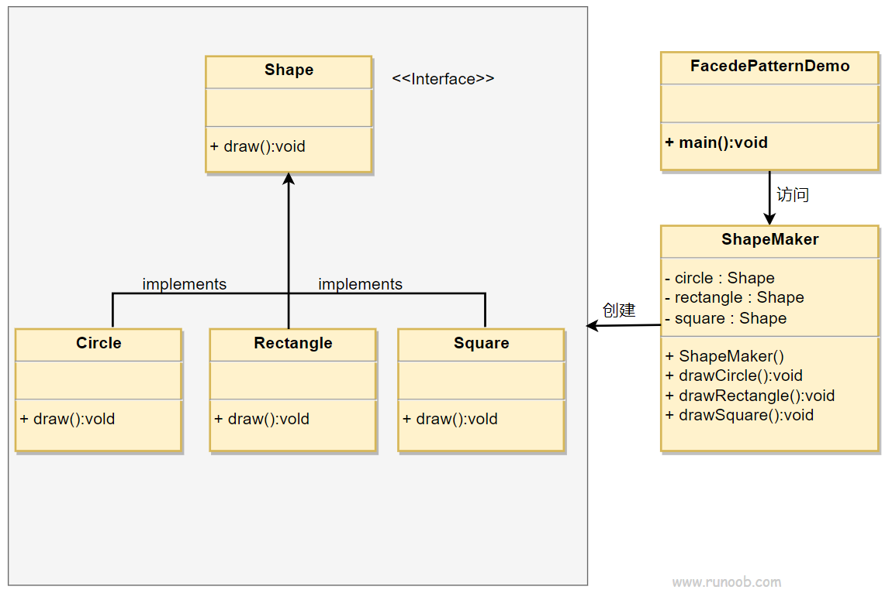
享元模式
享元模式（Flyweight Pattern）主要用于减少创建对象的数量，以减少内存占用和提高性能。这种类型的设计模式属于结构型模式，它提供了减少对象数量从而改善应用所需的对象结构的方式。
享元模式尝试重用现有的同类对象，如果未找到匹配的对象，则创建新对象。我们将通过创建 5 个对象来画出 20 个分布于不同位置的圆来演示这种模式。由于只有 5 种可用的颜色，所以 color 属性被用来检查现有的 Circle 对象。
介绍:
意图：运用共享技术有效地支持大量细粒度的对象。
主要解决：在有大量对象时，有可能会造成内存溢出，我们把其中共同的部分抽象出来，如果有相同的业务请求，直接返回在内存中已有的对象，避免重新创建。
何时使用： 1、系统中有大量对象。 2、这些对象消耗大量内存。 3、这些对象的状态大部分可以外部化。 4、这些对象可以按照内蕴状态分为很多组，当把外蕴对象从对象中剔除出来时，每一组对象都可以用一个对象来代替。 5、系统不依赖于这些对象身份，这些对象是不可分辨的。
如何解决：用唯一标识码判断，如果在内存中有，则返回这个唯一标识码所标识的对象。
关键代码：用 HashMap 存储这些对象。
应用实例： 1、JAVA 中的 String，如果有则返回，如果没有则创建一个字符串保存在字符串缓存池里面。 2、数据库的数据池。
优点：大大减少对象的创建，降低系统的内存，使效率提高。
缺点：提高了系统的复杂度，需要分离出外部状态和内部状态，而且外部状态具有固有化的性质，不应该随着内部状态的变化而变化，否则会造成系统的混乱。
使用场景： 1、系统有大量相似对象。 2、需要缓冲池的场景。
注意事项： 1、注意划分外部状态和内部状态，否则可能会引起线程安全问题。 2、这些类必须有一个工厂对象加以控制。
实现:
我们将创建一个 Shape 接口和实现了 Shape 接口的实体类 Circle。下一步是定义工厂类 ShapeFactory。
ShapeFactory 有一个 Circle 的 HashMap，其中键名为 Circle 对象的颜色。无论何时接收到请求，都会创建一个特定颜色的圆。ShapeFactory 检查它的 HashMap 中的 circle 对象，如果找到 Circle 对象，则返回该对象，否则将创建一个存储在 hashmap 中以备后续使用的新对象，并把该对象返回到客户端。
FlyWeightPatternDemo 类使用 ShapeFactory 来获取 Shape 对象。它将向 ShapeFactory 传递信息（red / green / blue/ black / white），以便获取它所需对象的颜色。
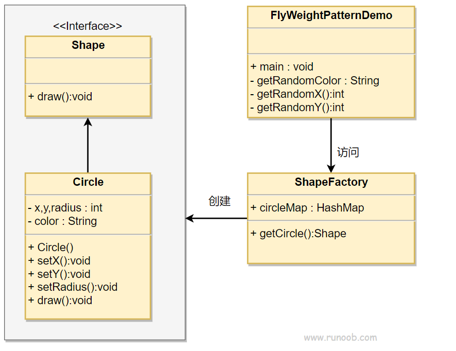
创建一个接口Shape.java。
1 | public interface Shape { |
创建实现接口的实体类Circle.java。
1 | public class Circle implements Shape { |
创建一个工厂ShapeFactory.java，生成基于给定信息的实体类的对象。
1 | import java.util.HashMap; |
FlyweightPatternDemo.java使用该工厂，通过传递颜色信息来获取实体类的对象。
1 | public class FlyweightPatternDemo { |
代理模式
在代理模式（Proxy Pattern）中，一个类代表另一个类的功能。这种类型的设计模式属于结构型模式。
在代理模式中，我们创建具有现有对象的对象，以便向外界提供功能接口。
介绍:
意图：为其他对象提供一种代理以控制对这个对象的访问。
主要解决：在直接访问对象时带来的问题，比如说：要访问的对象在远程的机器上。在面向对象系统中，有些对象由于某些原因（比如对象创建开销很大，或者某些操作需要安全控制，或者需要进程外的访问），直接访问会给使用者或者系统结构带来很多麻烦，我们可以在访问此对象时加上一个对此对象的访问层。
何时使用：想在访问一个类时做一些控制。
如何解决：增加中间层。
关键代码：实现与被代理类组合。
应用实例： 1、Windows 里面的快捷方式。 2、猪八戒去找高翠兰结果是孙悟空变的，可以这样理解：把高翠兰的外貌抽象出来，高翠兰本人和孙悟空都实现了这个接口，猪八戒访问高翠兰的时候看不出来这个是孙悟空，所以说孙悟空是高翠兰代理类。 3、买火车票不一定在火车站买，也可以去代售点。 4、一张支票或银行存单是账户中资金的代理。支票在市场交易中用来代替现金，并提供对签发人账号上资金的控制。 5、spring aop。
优点： 1、职责清晰。 2、高扩展性。 3、智能化。
缺点： 1、由于在客户端和真实主题之间增加了代理对象，因此有些类型的代理模式可能会造成请求的处理速度变慢。 2、实现代理模式需要额外的工作，有些代理模式的实现非常复杂。
使用场景：按职责来划分，通常有以下使用场景： 1、远程代理。 2、虚拟代理。 3、Copy-on-Write 代理。 4、保护（Protect or Access）代理。 5、Cache代理。 6、防火墙（Firewall）代理。 7、同步化（Synchronization）代理。 8、智能引用（Smart Reference）代理。
注意事项： 1、和适配器模式的区别：适配器模式主要改变所考虑对象的接口，而代理模式不能改变所代理类的接口。 2、和装饰器模式的区别：装饰器模式为了增强功能，而代理模式是为了加以控制。
实现:
我们将创建一个 Image 接口和实现了 Image 接口的实体类。ProxyImage 是一个代理类，减少 RealImage 对象加载的内存占用。
ProxyPatternDemo 类使用 ProxyImage 来获取要加载的 Image 对象，并按照需求进行显示。
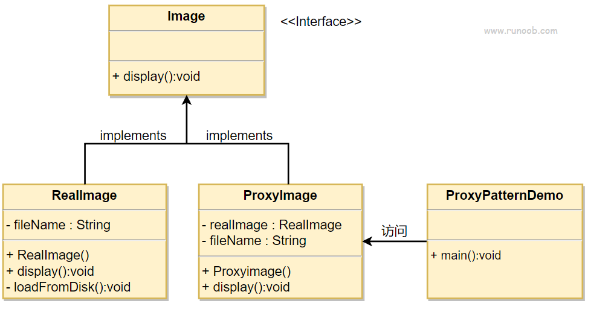
创建一个接口Image.java
1 | public interface Image { |
创建实现接口的实体类:
RealImage.java
1 | public class RealImage implements Image { |
代理类:ProxyImage.java
1 | public class ProxyImage implements Image{ |
当被请求时，使用 ProxyImage 来获取 RealImage 类的对象。ProxyPatternDemo.java
1 | public class ProxyPatternDemo { |